Energy Compass — states and strategies guide
English · Polski
This guide explains what Energy Compass does, every state its entities can report and the conditions that produce each state, and the six dispatch strategies. It describes release 0.1.36. The mathematical contract behind each rule lives in model and limitations; installation and dashboards are in the installation guide.
Energy Compass is advisory. It computes a plan and publishes it as Home Assistant entities. It never writes inverter registers and sends no messages by itself; controllers and notification blueprints decide whether to act on the plan. The repository ships one such controller, for Deye inverters through Solarman: see Deye inverter controller.
Contents
- How it works
- Entity overview
- Optimizer status — calculation lifecycle
- Alert and forecast validity
- Operating modes — the planned battery state
- Consumption levels — BOOST, CHEAP, NORMAL, LIMIT
- Windows and flexible energy depth
- Dispatch strategies
- Automatic strategy switching
- Window notifications
- Cost card
- Deye inverter controller (Solarman)
- Energy Atlas (optional)
- Reason code reference
How it works

Each calculation proceeds as follows:
- Snapshot and validate inputs. Prices, PV forecast, load forecast (from recorder history), battery SOC and daily counters are read and checked for freshness, units and plausibility.
- Build the problem. Native tariff slots (typically 15 min) over the planning horizon (24 h by default), hardware limits, SOC bounds, the carried operating-mode commitment and the active strategy bundle.
- Solve the base plan. A mixed-integer linear program minimizes cost (plus strategy weights)
under energy balance, battery, grid, mode-duration and export/charge-policy constraints. The
proven optimum is published; when
solve_time_limit_sruns out first, the best validated solution found so far is published instead and markedtime_limitedwith itsmip_gap. - Probe consumption. For each display interval, the solver is rerun with 1 kWh of extra load; the cost difference is the incremental cost of one more kWh, which is classified into a consumption level.
- Profile flexible loads. Separate solves for 3, 5, 10, 15 and 20 kWh blocks measure how much flexible energy can be scheduled before the price degrades.
- Publish. One coherent generation updates all entities; unchanged entities are not rewritten.
Recalculation cadence

- Periodic:
refresh_minutes(default 15, max 60) aligned to the wall clock; the Deye hybrid setup profile pre-fills 60. - Input-driven: at most once per
minimum_replan_seconds(default 900 s,0disables) while a valid plan is retained; SOC counts as changed only after movingsoc_trigger_percent(default 5 %) from the value that started the last calculation. - Boundaries: at each native settlement boundary the existing plan advances (consumed rows are dropped, mode clocks tick) without a solve.
- Plan lifetime: a new plan is valid until
generated_at + 2 × refresh_minutes, capped by forecast coverage.
Setup profiles (new installations)
Three axes on the first (User) setup form, Prosumer settlement, Polish distribution
tariff (buy_tariff) and Inverter, pre-fill editable tuning for a brand-new installation.
Each axis is chosen once; all default to Generic or None (no assignments), and picking a
profile applies its assignments to the draft immediately. This is revision 3 of the setup profiles;
an entry created under revision 1 or 2 keeps its record and is never re-resolved. The
pinned values below (0.20, 0.60, 0.13) were measured or backtested on one site — a G12 buy tariff,
net-billing RCE sell and a Deye LFP battery — and are a starting point, not a universal default.
Settlement axis:
| Profile | Currency | Pre-fills | Basis |
|---|---|---|---|
generic |
any | none | — |
pl_net_billing |
PLN | import_penalty_per_kwh 0.20 · terminal_mode value · terminal_value_per_kwh 0.60 · sell_multiplier 1.23 (only with preset pse/pse_solcast or an RCE market price sell source) |
backtested on one site |
pl_net_metering_80 |
PLN | sell_multiplier 0.8 |
net-metering ratio, installations ≤ 10 kWp |
pl_net_metering_70 |
PLN | sell_multiplier 0.7 |
net-metering ratio, installations > 10 kWp |
Polish distribution tariff axis (buy_tariff): the profile only pre-selects Tariffs → Buy
source → Polish tariff schedule for the chosen tariff; it assigns no setting and no price, and the
rates stay at 0 until you type them. Every catalog profile requires PLN.
| Profile | Currency | Effect | Basis |
|---|---|---|---|
generic |
any | none; keep a fixed buy rate | — |
g11 |
PLN | schedule G11, one rate | any operator |
pge_g12 |
PLN | schedule G12 | PGE Dystrybucja |
pge_g12w |
PLN | schedule G12w | PGE Dystrybucja |
tauron_g12 |
PLN | schedule G12 | Tauron Dystrybucja |
tauron_g12w |
PLN | schedule G12w | Tauron Dystrybucja |
enea_g12 |
PLN | schedule G12 with the Enea default hours | Enea Operator |
enea_g12w |
PLN | schedule G12w | Enea Operator |
energa_g12 |
PLN | schedule G12 | Energa-Operator |
energa_g12w |
PLN | schedule G12w | Energa-Operator |
stoen_g12 |
PLN | schedule G12 | Stoen Operator |
stoen_g12w |
PLN | schedule G12w | Stoen Operator |
Inverter axis:
| Profile | Pre-fills | Basis |
|---|---|---|
generic |
none | — |
deye_hybrid |
idle_drain_kw 0.13 · refresh_minutes 60 |
idle_drain_kw is site-measured; refresh_minutes is a Deye-specific trade-off |
Every pre-filled value stays fully editable and is never re-applied once the entry exists — not by Configure, not by Reconfigure. While a new installation is still being set up, changing the preset on the Installation step re-resolves the settlement profile: the 1.23 sell multiplier is added or dropped to track the preset (or an RCE market price sell source saved in the meantime) unless you have already edited it. Binding a pre-filled key to a helper overrides the pre-fill at save time; the Preview lists that key as edited, naming the helper and its effective value.
Polish settlement and tariff profiles require currency PLN; choosing one with another currency is
rejected, on the field that caused it. Setup profiles never set a tariff price (buy_rate,
buy_off_peak_rate, sell_rate, buy_addition, sell_addition, monthly_charge) and never touch a
strategy-owned setting.
Sell only PV (limit_export_to_pv) stays on with every settlement profile — a Polish prosumer may
only sell energy produced by their own PV — and is turned off either by switching to the max_export
strategy or by setting limit_export_to_pv to off directly; the explicit setting persists across
strategy changes.
The 1.23 deposit multiplier applies together with a raw-RCE preset (pse, pse_solcast) or a
raw-RCE sell source (Tariffs → Sell source → RCE market price (PSE): a forecast with a price
floor and every binding in PLN/MWh). New-entry saves re-evaluate it until the installation is created;
Configure and Reconfigure never do. With
examples/rce-sell-price.yaml, which already applies the floor and
the 1.23 factor itself, keep the sell multiplier at 1 (see tariff helper).
Revision 3 adds one rule to this: when the sell source is a forecast entity that already applies its
own settlement (a settlement attribute that names a multiplier, as in the sell template of
examples/rce-sell-price.yaml), the 1.23 multiplier is not
assigned, even with preset pse or pse_solcast, and binding such a source later removes a 1.23
you did not edit. Binding that template through
Detected sources also sets the sell multiplier to 1.
Net-metering's sell_multiplier is a one-time copy of the ratio, not a link to the buy price: it is
an approximation (the yearly kWh bank and G12 band mismatch are not modelled), and a later edit to
the buy price does not update it.
Preview shows setup-profile provenance for a profiled new entry: which keys each axis pre-filled, the
buy source pre-selected by a buy_tariff profile, any value edited after pre-fill (including a
helper-bound key, with the helper's effective value), and settlement notes — Sell only PV off, a sell
source that already applies its own settlement multiplier, raw RCE prices not floored at 0 (with the
RCE market price shortcut as the fix) or floored while the 1.23 multiplier is missing, or a
net-metering sell that no longer tracks buy — shown only for installations that used a setup profile.
The selection, together with the setup-profiles revision that resolved it, is stored on the config
entry (setup_profiles) and included in diagnostics.
Built-in Polish tariffs
For a Polish household, Tariffs → Buy source → Polish tariff schedule (G11/G12/G12w) replaces the
tariff helper YAML (the YAML example stays the fallback). Pick one of eleven
catalog entries; the zones come from the distributor's 2026 tariff, and you type the rates: Tariffs →
Fixed rates and transformations holds Buy rate (G11, or the peak rate) and Off-peak buy rate
(G12/G12w). Both rates must be above zero or the calculation fails closed with a message naming
those fields. The price of a slot is rate × multiplier × VAT factor + addition, as for a fixed
rate. The schedule needs no entity and does not limit the planning horizon. It requires currency PLN.
| Key | Operator and group | Weekday off-peak (tariff clock) | Free days | Source |
|---|---|---|---|---|
g11 |
any, G11 | none, one rate | — | — |
pge_g12 |
PGE Dystrybucja, G12 | Apr–Sep 15–17 and 22–6; Oct–Mar 13–15 and 22–6 | as weekdays | tariff 2026 §2.2.6/2.2.8/2.2.11 |
pge_g12w |
PGE Dystrybucja, G12w | as pge_g12 |
all day | same |
tauron_g12 |
Tauron Dystrybucja, G12 | 13–15 and 22–6 | as weekdays | tariff 2026 §2.2.6/2.2.7/2.2.9 |
tauron_g12w |
Tauron Dystrybucja, G12w | 13–15 and 22–6 | all day | same |
enea_g12 |
Enea Operator, G12 | default 13–15 and 22–6; set per meter by Enea | as weekdays | tariff extract 2026 §2.2.5/2.2.7/2.2.12 |
enea_g12w |
Enea Operator, G12w | 21–6 | all day | same |
energa_g12 |
Energa-Operator, G12 | 13–15 and 22–6 | as weekdays | tariff extract 2026 §3.2.5/3.2.6 |
energa_g12w |
Energa-Operator, G12w | 13–15 and 22–6 | all day | same |
stoen_g12 |
Stoen Operator, G12 | 13–15 and 22–6 | as weekdays | tariff 2026 §2.2.5/2.2.6/2.2.11 |
stoen_g12w |
Stoen Operator, G12w | 22–6 only | all day | same |
Free days of G12w are Saturdays, Sundays and statutory holidays (1 and 6 January, Easter Sunday and
Monday, 1 and 3 May, Pentecost, Corpus Christi, 15 August, 1 and 11 November, 24 December from
1 February 2025, 25 and 26 December); there are no substitute days. A meter that was not
reprogrammed can ignore a newly added holiday such as 24 December; the YAML fallback's
off_peak_dates covers that.
Clock. By default the zones follow local time (the Home Assistant time zone): a remote-read meter billed after hourly balancing uses wall-clock zones, so a day can have 23 or 25 local hours. An old non-remote meter keeps a fixed internal clock on winter time (the tariff clause in the sources above); turn on Old non-remote meter on winter time (fixed UTC+1) for it. To choose, compare your invoice's monthly day/night kWh with your hourly import data split by the windows Preview prints; if the summer months are off by about one hour, enable the winter clock. Season and weekday are classified on the date of the chosen clock. Preview prints the clock, today's off-peak windows and, for G12w, the statutory holidays in the horizon.
Enea G12. Enea sets the hours per meter: 8 hours within 22–7 (start 22 or 23) and 2 hours within 13–17 (start 13, 14 or 15). The default is 22 and 13 (Enea FAQ); the extra form asks for both, so check your meter or bill.
RCE sell price. Tariffs → Sell source → RCE market price (PSE) saves the sensor of the rce_pse
integration (attribute prices, value rce_pln, end dtime, PLN/MWh, 15 minutes) as a forecast source
with a price floor of 0: the raw value is floored at 0 per kWh before the multiplier, VAT and
addition (max(RCE, 0) × 1.23 with the net-billing multiplier). The floor is visible in Preview and
is dropped when the source is switched away from forecast or edited so that it is no longer a raw PLN/MWh RCE source. For a new installation, the PL
net-billing profile then assigns the 1.23 multiplier; in Configure and Reconfigure set the sell
multiplier yourself. Without the rce_pse integration use
examples/rce-sell-price.yaml.
Detected sources (new installations)
After the first (User) form of a new installation, Detected sources looks for sources
Energy Compass can use, binds the ones you keep and opens Preview: the quick path to a first plan.
It never runs in Configure or Reconfigure, never changes the preset or a setup profile, and never
touches the buy source (the buy_tariff profile and Tariffs stay the only buy path).
Candidates are recognised by integration identity (the integration, the entity's translation key
and the Energy dashboard preferences), never by entity id or name, so renamed or localized
entities are found too. If nothing is found, or you keep nothing, the main menu opens as before.
Every bound source stays editable in Sources.
Energy dashboard first. Energy Compass should read the same data as the Energy dashboard. For every role the dashboard covers (lifetime counters, solar, grid and battery power, battery SOC and the solar forecast) the dashboard's choice ranks first; the integration signals below are the fallback. For power it uses the normalized power sensor the dashboard stores. When both exist and differ, both are offered, the dashboard one is preselected and the line names both. The same entity found twice is offered once.
Controls. A row with one candidate is a single checkbox, ticked (BMS SOC: unticked). A row with several candidates is a drop-down: the preselected candidate, the others in order of preference and Do not bind last. A tie that cannot be resolved offers Do not bind preselected. Among equally ranked candidates the single Deye Solarman config entry breaks the tie, for example the dashboard's two grid meters resolve to the inverter's counter.
| Row | Candidates in order of preference |
|---|---|
pv |
the Energy dashboard solar forecast (solar_forecast, all its integrations added together); Solcast solcast_solar total sensors for today and tomorrow (total_kwh_forecast_today, total_kwh_forecast_tomorrow, attribute detailedForecast) |
sell |
the Energy Compass sell template (template: unique id starting energy_compass_, a settlement attribute naming a multiplier, and prices); rce_pse for today and tomorrow (rce_pse_today_price, rce_pse_tomorrow_price) |
load |
solarman lifetime household consumption (total_load_consumption) as a recorder statistic |
soc |
the dashboard battery SOC; an external SOC template (template, device class battery, unit %); solarman battery |
bms_soc |
solarman battery attribute BMS SOC; the one enabled BMS pack sensor (battery_N); never preselected |
battery_power |
the dashboard battery power; battery_power |
pv_power |
the dashboard solar power; pv_power |
grid_import_power, grid_export_power |
the dashboard grid power (sign +1 for import, −1 for export); grid_power with the same signs |
pv_energy |
the dashboard solar energy; total_production |
grid_import_energy |
the dashboard grid import; total_energy_import |
grid_export_energy |
the dashboard grid export; total_energy_export |
pv_energy_today |
today_production |
grid_export_energy_today |
today_energy_export |
- Solarman. Only config entries with at least one device from manufacturer Deye count. The inverter and its BMS packs are devices of one config entry. With several Deye entries every Solarman row has several candidates and no default. The sign conventions (battery + is discharge, grid + is import) were verified on one Deye profile only; the offered value is shown so you can check it.
- Validation. Each candidate is checked with the parsers Preview uses, on the exact binding that would be stored. Forecasts must parse (tomorrow may be unpublished); counters and power need a numeric state in W, kW, Wh or kWh; a SOC must be a finite value from 0 to 100 (a state SOC needs unit %); a load statistic needs a cumulative state class and kWh or Wh. An unusable candidate is not offered; the notes list it with the reason.
- Sell template. Binding it sets the sell multiplier to 1, because the template already applies its floor and multiplier. Setup profiles revision 3 then does not add 1.23 again (see Setup profiles). A stale template is not offered.
rce_pse. The sensor must report PLN/MWh (the integration default); thePLN/kWhprice unit option is rejected here and in Tariffs → Sell source → RCE market price (PSE), because it would price energy a thousand times too low.- Solcast.
detailedForecastexists only while the option Include detailed forecast half-hourly is on. The day 3–7 sensors, the hourly detail and the rooftop-site sensors are never used. - BMS SOC. It is offered unticked. With imbalanced battery cells the BMS SOC and the battery SOC can differ by more than Battery → Soc disagreement percent (default 5 %), and then every plan is blocked. Tick it only if both agree over a full day.
- Gates.
sellappears only with currency PLN. With PV off there are nopv,pv_powerorpv_energyrows; with the battery off nosoc,bms_socorbattery_powerrows. The two daily counters are never gated. - Stored age limits of the measurements: 3600 s for
battery_power,grid_import_powerandgrid_export_power; 86400 s forpv_power, the lifetime counters and the daily counters (a constant 0 W at night never updates the state). - Never detected:
buy;throughput_today(to usedaily_cyclesprovide one entity with the AC-side charge plus discharge since midnight, see source requirements);battery_energy,battery_charge_powerandbattery_discharge_power; and helpers.
Preview then shows the usual acknowledgements for a new entry. Its Back to the main menu checkbox leaves Preview without validating or saving anything. The matching reference tables are in source requirements.
Energy dashboard solar forecast
Sources → Add source → PV → Energy dashboard solar forecast (mode solar_forecast) reads the
same solar forecast as the Energy dashboard, from every integration with an Energy solar-forecast
platform (Solcast, Forecast.Solar, Open-Meteo and others). Pick one or more loaded integrations;
their forecasts are added, as the dashboard adds them. The form defaults to the integrations in the
dashboard's solar settings. Detected sources offers the same mode first when the dashboard has a
forecast.
- Hourly dashboard rule. Every value is Wh in the local hour that contains its key; values in one hour are summed. The plan sees hourly energy from the current hour to the last hour with a key, up to 49 hours ahead; keys older than two days are ignored.
- Night hours that the provider omits count as 0 Wh. A gap inside the day is also 0, so a provider gap makes the plan more conservative.
- Provider notes. Solcast's platform uses the forecast type chosen in its options (
key_estimate, for example the 10th percentile) in 30-minute steps, while the Solcast sensor mode readspv_estimate. Forecast.Solar reports irregular keys; Energy Compass reads them as the dashboard does. - No age check.
wh_hourscarries no publication time. A forecast update is picked up at the next recalculation (scheduled or event-triggered), not by itself. - Failures act like a missing entity: an integration that is missing, not loaded, without a platform or without data makes the inputs invalid with a message naming its domain.
- No mixing. Entity forecast arrays and Energy dashboard forecasts cannot be combined (both typically come from the same provider, so the energy would be counted twice). Saving one removes the other. Turning PV off in Installation clears both.
Preview adds a line PV source: Energy dashboard solar forecast … for this mode.
Expert settings
The main menu of Setup, Configure and Reconfigure starts with the common groups only: Installation,
Sources, Battery, Hardware, Tariffs, Load forecasting and Notification preferences. Show expert
settings adds the four expert groups, Planning, Consumption outlook, Performance and
input quality and Presentation, and Numeric helper bindings; Hide expert settings hides
them again. The view is per flow and is not stored. Hidden settings keep their values and keep
working. A script that drives the options flow over REST must post show_expert before it selects a
hidden group, otherwise Home Assistant rejects the step.
Saving options
Saving Configure is applied live. The integration adopts the new settings, sources, helpers and
tariffs without reloading the entry, so no entity becomes unavailable and the published plan keeps
running as a retained plan (plan_retained=true, refreshing=true, optimizer calculating) until the
recalculation publishes its replacement. The Deye controller keeps
executing that plan and accepts the new one when it is published; it does not fall back to the base
profile. Source and helper bindings are re-subscribed at the same time. The entry still reloads,
with the previous plan lost until the first new calculation (the controller keeps executing its accepted
plan meanwhile), when the save changes which entities
exist or how they are named: Periodic LFP balance charge (lfp_balance), Enable flexible energy depth
(flexible_load_enabled), Expose costs (expose_costs), Expose windows (expose_windows), the
installation name or the currency. A running Energy Atlas is refreshed in
place (state tracking and site attributes), without a restart of its sink. Reconfigure always
reloads.
Entity overview
<name> is the integration entry's title.
| Entity | EN name | PL name | State |
|---|---|---|---|
sensor.<name>_consumption_compass |
Consumption compass | Kompas zużycia | BOOST / CHEAP / NORMAL / LIMIT |
sensor.<name>_consumption_cost |
Consumption cost | Koszt zużycia | currency/kWh of one more kWh now |
sensor.<name>_flexible_energy_depth |
Flexible energy depth | Głębokość elastycznego zużycia | kWh |
sensor.<name>_next_change |
Next change | Następna zmiana | timestamp of next level change |
sensor.<name>_next_boost_start |
Next boost start | Początek zwiększonego zużycia | timestamp |
sensor.<name>_next_cheap_start |
Next cheap start | Początek taniego okresu | timestamp |
sensor.<name>_next_limit_start |
Next limit start | Początek ograniczenia | timestamp |
sensor.<name>_energy_compass |
Energy compass | Kompas energii | one of six operating modes |
sensor.<name>_plan |
Plan | Plan | generation timestamp + full plan attributes |
sensor.<name>_expected_net_cost |
Expected net cost | Przewidywany koszt netto | currency over the horizon |
sensor.<name>_expected_wear_cost |
Expected wear cost | Przewidywany koszt zużycia baterii | currency over the horizon |
sensor.<name>_optimizer_status |
Optimizer status | Stan optymalizatora | calculation status (diagnostic) |
sensor.<name>_battery_balance |
Battery balance | Balansowanie baterii | ok / eligible / scheduled / holding / overdue (diagnostic) |
binary_sensor.<name>_forecast_valid |
Forecast valid | Poprawna prognoza | on / off |
binary_sensor.<name>_alert |
Alert | Alert | on / off (diagnostic, problem) |
select.<name>_strategy |
Strategy | Strategia | one of six strategies |
sensor.<name>_deye_controller |
Deye controller | Sterownik Deye | timestamp of the next controller run; only with the Deye controller enabled |
select.<name>_deye_mode |
Deye mode | Tryb sterownika Deye | Off / Simulation / Auto; only with the controller enabled |
sensor.<name>_deye_controller_runtime |
Deye controller runtime | Stan pracy sterownika Deye | runtime code; only with the controller enabled |
Cost sensors can be disabled with Presentation → Expose costs, window timestamps with
Expose windows, and flexible depth with Consumption outlook → Enable flexible energy depth.
Battery balance is disabled by default and enabled with the LFP balance setting; its
attributes carry last_completed, next_due, days_overdue, planned_start, planned_end,
planned_mode, hold_progress_minutes, hold_required_minutes and threshold_percent.
Availability rule

Optimizer status — calculation lifecycle

| State | EN / PL label | When it occurs | What stays published |
|---|---|---|---|
ready |
Ready / Gotowy | The last calculation produced a validated base plan and it was published: proven optimal, or the best solution found within solve_time_limit_s (time_limited: true). |
The new plan. ready does not guarantee complete reference coverage — check reason. |
calculating |
Calculating / Obliczanie | A calculation is queued or running. reason says why: inputs_changed, interval_boundary (periodic refresh due), inputs_recovered, calculating (worker started), soc_rebase_pending (upward SOC jump awaiting confirmation). |
The previous plan while it covers now, with refreshing: true. An existing alert stays on. |
invalid_input |
Invalid input / Niepoprawne dane | A required source is missing, unavailable, stale, in wrong units, out of range, SOC disagrees with BMS or jumped, daily counters are from the previous day, settings are invalid; also no_current_interval and expired_inputs when the retained plan no longer covers now. |
The previous plan while it covers now (plan_retained: true); otherwise nothing. |
timeout |
Timeout / Przekroczony czas | The base solve reached solve_time_limit_s (default 10 s) without any feasible solution, or the worker exceeded total_time_limit_s + 1 (reason worker_deadline). |
Previous plan within coverage. |
infeasible |
Infeasible / Brak rozwiązania | The solver proved no plan satisfies every hard constraint (e.g. SOC reserve, terminal rule, a carried mode commitment, Sell only PV deficit, grid limits). | Previous plan within coverage. |
error |
Error / Błąd | Any other solver failure or unexpected exception; reason holds the solver reason or exception class. |
Previous plan within coverage. |
insufficient_data |
Insufficient data / Za mało danych | Reserved in translations; not emitted by the current coordinator — missing data reports invalid_input. |
— |
Attributes: last_calculation_started_at, calculations_since_load,
expired_previous_generated_at. Diagnostics add calculations_last_hour and
calculations_last_24h.
Superseded results
If inputs change while a solve runs, the finished result is still published when only inputs (not configuration) changed — it is fresher than the retained plan — and a new solve follows. Configuration, registry and invalid-input changes discard in-flight results.
Alert and forecast validity
Forecast valid (binary_sensor.<name>_forecast_valid)
| State | Condition |
|---|---|
on |
A published plan exists and now < valid_until. This holds during retries and while a retained plan still covers now. |
off |
No plan, or its coverage/lifetime has ended. Recommendations become unavailable. |
Attribute current_guidance_valid is true only when the consumption probe for the current
interval produced a known level. Other attributes: coverage_end, requested_end,
coverage_complete, input_ages, missing_sources, load_quality.
Alert (binary_sensor.<name>_alert)

code |
EN / PL | Condition |
|---|---|---|
invalid_input |
Invalid input / Nieprawidłowe dane wejściowe | Any input validation failure (see optimizer status). |
soc_measurement_jump |
SOC measurement jump / Skok wskazania SOC | Between two reports SOC changed by more than battery power × elapsed time + soc_jump_percent (default 2 %) of capacity. Downward jumps alert immediately; upward jumps (BMS recalibration near full) first show calculating/soc_rebase_pending and alert only if not confirmed within 300 s. Recovery needs fresh plausible reports spanning ≥ 60 s. |
timeout |
Calculation timeout / Przekroczony czas obliczeń | Solve or worker deadline exceeded. |
infeasible |
No feasible plan / Brak wykonalnego planu | No plan satisfies the hard constraints. |
error |
Calculation error / Błąd obliczeń | Other failure. |
Attributes: code, reason, since, plan_retained, last_successful_plan_at. A retry does
not clear the alert; only a successful new plan does.
Plan retention

A retained plan is never extended beyond its original coverage and is not carried across an integration reload or Home Assistant restart. Saving Configure does not reload the integration, so it does not end the plan: see Saving options. The Deye controller keeps its own accepted copy of the plan across an entry reload, but drops it at a restart.
Operating modes — the planned battery state
The Energy compass sensor shows the operating mode of the current interval; every row of the
plan's intervals attribute carries dispatch_mode. There are six modes. Per interval of h
hours: activity = minimum_mode_power_kw × h (default 0.1 kW) and
surplus = max(PV − load, 0).
| Mode | EN meaning | Occurs when (physical flows) | Allowed only if |
|---|---|---|---|
CHARGE_GRID |
Charge from grid | Battery charge ≥ surplus + activity — more is charged than PV surplus can supply, so the grid feeds the battery. No discharge, no curtailment. | allow_grid_charge on; price ≤ grid-charge ceiling when that limit is on. |
CHARGE_PV |
Charge from PV | activity ≤ charge ≤ surplus — only solar surplus charges. No discharge, no curtailment. | PV surplus exists. |
DISCHARGE_GRID |
Discharge with export | Discharge ≥ activity and grid export ≥ activity — the battery sells energy. | allow_battery_export on; grid export capacity > 0; Sell only PV budget and export-benefit hurdle allow it. |
SELF_CONSUME |
Self-consumption | Discharge ≥ activity, no charge, no export, no curtailment — the battery covers the house. | SOC above operating reserve. |
HOLD |
Hold | No charge, no discharge, no curtailment — the battery idles; the grid/PV cover load. | Always available. |
CURTAIL |
Curtail PV | Curtailment ≥ activity, no battery activity. | allow_curtailment on. |
When mode duration is disabled (minimum_mode_minutes = 0), the display state is derived from flows
by precedence: CURTAIL → CHARGE_GRID → CHARGE_PV → DISCHARGE_GRID → SELF_CONSUME → HOLD.
A planned LFP balance hold does not add a mode: its rows reuse CHARGE_PV or
CHARGE_GRID and carry balance_hold: true in the plan's intervals attribute.
Transitions and minimum duration

The diagram is simplified with HOLD as a hub: after its minimum duration any mode may be followed directly by any other available mode.
Rules (defaults: 60 min, 0.1 kW):
- Every newly started mode — including HOLD and CURTAIL — lasts at least
minimum_mode_minutes. Only a final passive HOLD/CURTAIL run may be clipped by coverage. The coordinator persists the accepted mode and its start; recalculation and restart preserve the clock. - PV-follow group:
CHARGE_PVandSELF_CONSUMEshare one clock — in both the inverter charges from surplus and covers a deficit from the battery, so flipping between them is not a mode change. - Any other change (source, destination, HOLD or CURTAIL) starts a new clock. Idle HOLD cannot fund an active run.
- Coverage: a new active mode needs a full duration of forecast coverage remaining.
- Safety exception (pause, not reset): during an unexpired active commitment the current row
shows HOLD when the observed SOC is already at the upper bound (charging modes —
observed_soc_maximum) or at/below the reserve (discharge modes —observed_soc_minimum), or when a carriedCHARGE_GRIDmeets a price above the ceiling before its deadline (grid_charge_price_limit). The interrupted mode and deadline stay stored; no other mode may start before that deadline. Exposed indispatch_policy.safety_exception. - Strategy change (reset): writing a new strategy drops the carried commitment for the next plan, which starts unlocked (see strategy-switch release).
- Setting
minimum_mode_minutes = 0disables duration and minimum-power rules.
Policies that gate modes
| Policy | Default | Effect |
|---|---|---|
Sell only PV (limit_export_to_pv) |
on | Per local day: exported energy ≤ PV generated (observed since midnight + forecast). Requires pv_energy_today and grid_export_energy_today counters. |
Export limit scope (export_limit_scope) |
local_day |
local_day checks the budget once for the whole day; produced checks it as a running total so export can never run ahead of PV generated so far that day. See Sell only PV. |
Limit grid-charging price (limit_grid_charge_price, maximum_grid_charge_price) |
off | CHARGE_GRID only at buy price ≤ ceiling for its whole minimum duration. |
Minimum export benefit (minimum_export_episode_benefit) |
1 currency unit | Each additional battery-export period must improve full-horizon cost by at least this amount. 0 disables. |
Minimum grid-charge episode benefit (minimum_grid_charge_episode_benefit) |
0 (off) | Same hurdle for new grid-charge periods; consolidates charging into fewer episodes. |
Import penalty (import_penalty_per_kwh) |
0 | Planning-only shadow price per imported kWh, under every strategy. |
Inverter standby loss (idle_drain_kw) |
0 (off) | Constant battery drain modelled per interval. |
Battery buffer for expensive periods (peak_reserve_margin_kwh) |
0 (off) | Energy kept above the forecast need when an expensive period starts. See Peak-period reserve. |
Terminal rule (terminal_mode) |
preserve_initial |
End SOC ≥ start SOC, or value: stored energy at the end is credited at terminal_value_per_kwh. |
Setup profiles can pre-fill the import penalty, standby loss and terminal rule for new installations; see Setup profiles.
Peak-period reserve
The load forecast is a mean, so a plan that drains the battery exactly to the reserve by the end of an
expensive period falls short on roughly every second day. peak_reserve_margin_kwh asks the solver to
enter each expensive period with that much energy on top of the forecast need. It requires Limit
grid-charging price: an expensive period is a run of intervals whose buy price is above
maximum_grid_charge_price, i.e. where the battery cannot be refilled from the grid. The target applies
to the end of the cheap interval right before the run:
entry target = min(usable capacity, reserve + peak_reserve_margin_kwh + run deficit / η_discharge)
where the deficit sums max(0, load − PV) over the run. Intervals inside the run carry no target: the
plan is recalculated during the run, and a target there would make it buy at the expensive price to
rebuild the buffer once the house had used it — the opposite of what the buffer is for. For the same
reason a run that is already in progress when the plan is calculated gets no target, nor does a run
where PV covers the house. The target is soft: a shortfall is billed at the median expensive price
minus the ceiling and reported as peak_reserve_shortfall_kwh; reported costs never include it. Inside
the run the buffer is ordinary stored energy, so the plan may still export it when selling pays more
than the later purchase. It works in every strategy, next to the autonomy floor. Warnings:
peak_reserve_requires_grid_charge_ceiling (setting above 0 while the ceiling is off) and
peak_reserve_inactive (no upcoming expensive run with a deficit in the horizon).
Sizing: 0.25–0.75 kWh is a reasonable start. In a backtest on one household with a two-zone tariff, 0.5 kWh halved the mornings that ran out before PV (42 % → 21 %) at roughly neutral cost: the buffer is not lost, it is used later or valued at the end of the horizon.
Consumption levels — BOOST, CHEAP, NORMAL, LIMIT
The Consumption compass answers "how attractive is using one more kWh in this interval?". For
each display interval (default 60 min over 24 h) the solver reruns with probe_kwh (default
1 kWh) of extra load. Consumption cost = (probe plan cost − base plan cost) ÷ added kWh. Because
the battery and grid are re-optimized, this is the true marginal cost — it can differ from the
tariff price (e.g. solar that would otherwise be exported costs its lost export value).

| Level | EN / PL | Condition | Typical situation |
|---|---|---|---|
BOOST |
Boost / Zwiększone zużycie | Cost strictly below boost_ceiling (default 0.01 currency/kWh). |
Free or negative energy: surplus PV that cannot be stored or exported, negative prices. Run everything you can. |
CHEAP |
Cheap / Tanio | Not BOOST, and cost ≤ cheap_percentile (default 25th) of reference costs, or ≤ the minimum purchase tariff in the reference horizon. |
Among the cheapest hours of the reference window. Good time for flexible loads. |
LIMIT |
Limit / Ograniczenie | Cost strictly above both limit_floor (default 1 currency/kWh) and the limit_percentile (default 75th). |
Expensive peak — extra use forces costly import or loses valuable export. Postpone. |
NORMAL |
Normal / Normalnie | Anything else. | Average conditions. |
| unknown | — | The probe failed or ran out of time, or the interval lies beyond forecast coverage. | Entity unavailable; later windows can still be known. |
Percentiles come from successful probe costs across the reference horizon (default 24 h) using
linear interpolation. If a full reference probe fails, short_coverage decides: absolute_fallback
(default: keep BOOST/LIMIT absolute rules and the minimum-tariff CHEAP rule) or unavailable.
Windows and flexible energy depth
Windows
Adjacent intervals of the same level merge into windows. next_boost_start, next_cheap_start
and next_limit_start show the start of the active or next window of that kind; next_change shows
the next known different level.
Attribute status |
Condition |
|---|---|
active |
Window start ≤ now < end. |
upcoming |
Window starts later within coverage. |
none_in_coverage |
No such window in the forecast; the entity is unavailable. |
start_basis is forecast, or first_observed when an already active window keeps its first
observed start across recalculations and restarts. next_change stops at unknown coverage rather
than guessing.
Flexible energy depth
Answers "how much deferrable energy can I use cheaply?". The solver independently places 3, 5, 10,
15 and 20 kWh blocks at up to flexible_load_max_power_kw (default 3 kW).

| Profile status | Condition |
|---|---|
ANCHOR |
The 3 kWh profile; its average incremental cost is the anchor price. |
STABLE |
Marginal block cost ≤ anchor + flexible_price_degradation_percent (default 15 %) of |
DEGRADED |
Marginal block cost above that threshold — stops the published depth. |
UNKNOWN |
Not solved: insufficient_time (block cannot fit at max power within the horizon), timeout, or a solver reason. Stops the depth. |
Groups: small (3/5 kWh), medium (10/15 kWh), large (20 kWh).
Dispatch strategies
select.<name>_strategy chooses which objective bundle the solver uses. Every strategy keeps all
hard physical constraints; strategies change only planning weights and a small set of
policy flags. Reported costs (expected_net_cost, consumption cost) always stay real currency —
strategy penalties never appear in them.
| Strategy | EN / PL label | Goal | Typical use |
|---|---|---|---|
cost_min |
Cost minimisation / Minimalizacja kosztów | Lowest total cost | Default, everyday |
self_sufficiency |
Self-sufficiency / Samowystarczalność | Fewest grid kWh | Flat prices, off-grid preference, zero/negative prices |
backup_ready |
Backup ready / Gotowość awaryjna | Keep a high reserve | Storm warning, planned outage, winter |
pv_swap |
PV swap / Zamiana energii PV | Buy cheap at night, sell own PV later | Small winter PV with an evening sell premium |
max_export |
Maximum export / Maksymalny eksport | Unrestricted arbitrage | High sell-price windows |
grid_friendly |
Grid friendly / Przyjazna dla sieci | Flatten import/export peaks | Capacity tariffs, weak connection |
What each strategy changes
The solver minimizes
grid = Σ ( import_weight × buy × import + import_kwh_weight × import
− export_weight × (sell − pv_export_margin) × export )
+ battery_export_penalty_per_kwh × battery_export
autonomy = soc_target_weight × Σ (deepest shortfall per window below the autonomy floor)
peak = peak_import_weight × max(import power)
caps = cap_violation_weight × Σ (import/export above soft caps)
objective = grid + wear + episode hurdles + autonomy + peak + caps − terminal credit
| Strategy | Autonomy floor | Sell only PV | Grid-charge ceiling | Export-benefit hurdle | Weights |
|---|---|---|---|---|---|
cost_min |
off | user setting | user setting | user setting | defaults (only import_penalty_per_kwh) |
self_sufficiency |
on | user setting | user setting | user setting | import_kwh_weight = max(5.0, max |buy| + 0.50, import penalty); battery-export penalty 0.20/kWh |
backup_ready |
on, floor ≥ 80 % capacity | user setting | user setting | user setting | floor weight ≥ 2.0/kWh |
pv_swap |
on | forced on | forced off | user setting | sell price reduced by margin 0.05/kWh |
max_export |
off | forced off | forced off | forced 0 | defaults |
grid_friendly |
off | user setting | user setting | user setting | peak import 0.50/kW, soft-cap violation 2.0/kWh |
"User setting" means the strategy leaves the option as configured. Forced values apply only to
options the user has not set explicitly: any strategy-owned option that deviates from its shipped
default is recorded in explicit_strategy_fields and is never overridden by a bundle.
All numbers above are defaults of Planning options:
self_sufficiency_import_price_per_kwh (5.0), self_sufficiency_export_penalty_per_kwh (0.20),
backup_target_soc_percent (80), backup_shortfall_price_per_kwh (2.0),
pv_swap_margin_per_kwh (0.05), peak_import_price_per_kw (0.50),
cap_violation_price_per_kwh (2.0), grid_friendly_import_cap_kw / _export_cap_kw (0 = site
connection limit), autonomy_margin_per_kwh (0.10).
Autonomy floor (used by self_sufficiency, backup_ready, pv_swap)
The floor asks: will the battery carry the house through the next period where load exceeds PV? The horizon is split into windows by cumulative net surplus; within each window the target is
soc_target[t] = min(usable capacity, reserve + (1 / η_discharge) × Σ deficit until window end)
The deepest shortfall below the target is billed once per window at soc_target_weight =
expected night rebuy price (median night buy price) + autonomy_margin_per_kwh. The floor looks
48 h ahead on PV/load forecasts even before tomorrow's prices are published. It is soft:
violations become autonomy_shortfall_kwh on the plan instead of an infeasible solve. It needs a PV
source (autonomy_floor_requires_pv otherwise).
LFP balance charge
LFP packs need a periodic full charge and a short hold at the top so the BMS can
balance cells and re-anchor its SOC. With Periodic LFP balance charge
(lfp_balance) on, Energy Compass tracks the last completed balance and plans
the next one. The tracker itself keeps observing SOC and advancing its state even
while lfp_balance is off; turning the setting on only starts publishing balance
windows and the diagnostic sensor.
| Setting | Default | Meaning |
|---|---|---|
balance_interval_days |
7 | Days between completed balances |
balance_hold_minutes |
60 | Minutes SOC must stay at or above the threshold |
balance_soc_threshold |
99 % | SOC that counts as full |
balance_value |
5.0 | Value of balancing on the due day |
A balance completes after SOC stays at or above the threshold for the whole
hold. A reading below the threshold restarts the hold. Only observed time
counts: an unavailable or stale SOC gives no credit, and two full readings more
than soc_max_age_seconds apart restart the hold from the later one (a hold
whose last full reading is older than that is neither holding nor complete).
Completion is evaluated lazily — while full readings keep arriving, the hold
completes on the next check without needing a state change. Phases: ok →
eligible (the earlier of 2 days or half the interval before due) → due;
holding overlays whichever phase is active while a hold is running. A hold that
starts while the balance is still ok (for example SOC back at 100 % the day
after a balance) is tracked and completes, but is not scheduled: the optimizer
gets no hold window and no miss cost for it.
The optimizer may pick one hour-aligned hold window: candidate windows start only
on the whole hour, and while due, only within the next 24 h (an eligible
balance may look anywhere across the horizon). Inside the chosen window SOC stays
at or above the threshold and the battery does not discharge. Skipping costs 10 %
of balance_value while eligible — small, so the planner normally balances only
on cheap or free energy, but it still picks a grid window that costs less than
that — balance_value × (1 + days overdue) once due, and 10 × balance_value
during a hold that is eligible or due. A window is published as CHARGE_PV
only when PV covers load in every one of its slots; otherwise (mixed PV/grid or
pure grid, such as a night window) it is CHARGE_GRID, which additionally
requires grid charging to be allowed and the grid-charge price ceiling (if any)
to pass in every slot — with balance_hold: true on every row. From the slot before the earliest candidate
window to the horizon end, the battery's energy may rise up to full capacity
instead of the configured SOC ceiling, so a hold is never blocked by
soc_ceiling below 100 %; that lift only matters when the ceiling is below
100 %. Consumption probes keep the chosen window fixed so a probe's extra load
prices the load, not the balance choice.
The Battery balance diagnostic sensor (sensor.<name>_battery_balance)
reports ok, eligible, scheduled, holding or overdue, with
last_completed, next_due, days_overdue, planned_start, planned_end,
planned_mode, hold_progress_minutes, hold_required_minutes,
threshold_percent.
cost_min — cost minimisation
- Goal: lowest forecast cost: purchases − sales + battery wear − terminal credit.
- Changes: nothing; byte-identical to the plain model when
import_penalty_per_kwh = 0. - Behaviour: charges when energy is cheap (grid or PV), discharges into expensive hours, exports only when the spread beats losses, wear and the export-benefit hurdle.
- Choose when: everyday operation; the default and the fallback of the switch blueprint.
- Watch out: it may leave the battery low before a cheap-looking night if forecasts are wrong — no autonomy reserve.
self_sufficiency — self-sufficiency
- Goal: minimize grid kWh, not currency.
- Changes: every imported kWh costs at least
max(5.0, highest |buy price| + 0.50, import_penalty_per_kwh), so import always dominates price differences; battery export costs an extra 0.20/kWh; autonomy floor on. - Behaviour: fills the battery from PV, avoids grid charging and battery export unless needed, keeps enough energy for the next deficit window.
- Choose when: day/night price spread is small (the blueprint picks it when the spread is below 0.15 PLN/kWh), when prices are zero or negative, or when independence matters more than cost.
- Watch out: reported costs stay real — this strategy can cost more money than
cost_min.
backup_ready — backup ready
- Goal: keep a large reserve for an outage.
- Changes: autonomy floor on and raised to at least
backup_target_soc_percent(80 %) of capacity; its weight is at leastbackup_shortfall_price_per_kwh(2.0/kWh). - Behaviour: refills to ~80 % and avoids discharging below it unless the shortfall is worth more than 2.0/kWh; the floor stays soft, so a plan always exists.
- Choose when: storm or grid-outage warnings, planned maintenance, cold winter nights. The
blueprint's
alertrule selects it when your alert entity is on. - Watch out: combining it with a low grid-charge ceiling raises
grid_charge_ceiling_below_autonomy_weight— the floor could be emptied but never refilled.
pv_swap — PV swap
- Goal: in low-PV seasons, buy cheap at night and sell the day's real PV output at a later, higher price.
- Changes:
pv_export_margin(0.05/kWh) is subtracted from every sell price (the export must beat the night buy by at least that margin); Sell only PV forced on (daily export ≤ daily PV); grid-charge ceiling forced off (so night charging is not blocked); autonomy floor on. - Behaviour: grid-charges overnight, lets the day's PV cover the house, then exports up to the day's generated PV in the evening peak.
- Choose when: tomorrow's PV forecast is below the daily load and
evening sell × round-trip efficiency ≥ night buy + margin(the blueprint'spv_swaprule). - Watch out: Sell only PV counts energy, not provenance — exported battery energy is limited in total to the day's PV, not traced to its origin.
max_export — maximum export
- Goal: pure arbitrage, maximize revenue from exports.
- Changes: export-benefit hurdle forced to 0, Sell only PV forced off (grid-charged energy can be resold), grid-charge ceiling forced off, autonomy floor off.
- Behaviour: charges whenever buy is low, discharges into the grid whenever the spread covers losses and wear; may do several export episodes a day.
- Choose when: exceptional sell prices, a tariff that rewards export.
- Watch out: most battery cycles; check whether your contract allows reselling grid energy. Never selected automatically.
grid_friendly — grid friendly
- Goal: flatten the grid profile — avoid high import peaks and limit export power.
- Changes: peak import term
peak_import_price_per_kw(0.50/kW of the highest import power); soft import/export capsgrid_friendly_import_cap_kw/grid_friendly_export_cap_kw(0 = site limit), each kWh above them costscap_violation_price_per_kwh(2.0); autonomy floor off. - Behaviour: spreads grid charging over longer windows, uses the battery to shave import peaks, keeps export under the cap.
- Choose when: capacity/power-based tariffs, a weak connection or a fuse near its limit.
- Watch out: caps are soft; excess is reported in
cap_violation_kwhinstead of failing. Never selected automatically.
Plan attributes for strategies
| Attribute | Meaning |
|---|---|
strategy |
Strategy that produced this plan (may lag the select while a recalculation runs). |
autonomy_shortfall_kwh |
Total shortfall below the autonomy floor; 0 = floor met. |
peak_reserve_shortfall_kwh |
Total shortfall below the peak-period reserve; 0 = met or off. |
time_limited |
true when the base solve hit solve_time_limit_s and the best validated solution found so far was published instead of a proven optimum. |
mip_gap |
Relative MIP gap the solver reported for the published plan: 0 = proven optimal; for a time-limited plan, the bound on how far its objective may be from the optimum (e.g. 0.017 = 1.7 %). |
cap_violation_kwh |
Total energy above grid_friendly soft caps; 0 = caps met. |
Strategy-switch release

A strategy change is a reset: the carried mode commitment is released so the new strategy is not trapped in the old mode's minimum duration. A current export episode is kept so its hurdle is not charged twice.
Automatic strategy switching
The optional blueprint strategy_switch.yaml
picks one strategy per day. It runs at 14:05 (after RCE next-day prices and Solcast), retries
hourly until 20:00 if next-day prices are missing, and reconciles a half-applied write at Home
Assistant start.

| Input | Default |
|---|---|
| Night window | 22:00–06:00 (lowest buy price in plan intervals) |
| Max buy | highest buy price across all plan intervals |
| Evening window | 17:00–21:00 (max sell price from RCE next day) |
| Round-trip efficiency | 0.90 |
| Self-sufficiency spread margin | 0.15 PLN/kWh |
| PV swap margin | 0.05 PLN/kWh |
| Enabled rules | alert, pv_swap, self_sufficiency (cost_min is the fallback) |
A manual change of the select blocks the economic rules until the next successful scheduled
run; the alert rule is never blocked. max_export and grid_friendly are manual-only. Setup
details: installation guide.
Window notifications
The optional blueprint notifications.yaml
tells the household when extra use is cheap (favorable window) or when an expensive LIMIT window
is starting. Energy Compass itself never sends anything; Notify enabled in the integration
options is the master switch. Setup: installation guide.

| Message | When |
|---|---|
| Use the cheap energy / Wykorzystaj tanią energię | a favorable window is running and the whole rest of it is BOOST |
| A good time for household appliances / Dobry moment na domowe urządzenia | a favorable window is running, not all BOOST |
| Plan heavy use for later / Zaplanuj większe zużycie na później | a LIMIT window starts within the lead time, or is already running |
The message names the window's local times and suggests moving laundry, the dishwasher or car
charging. The action receives notification_title, notification_message and event_kind.
| Input | Meaning |
|---|---|
compass, plan, forecast_valid, alert, optimizer_status |
Consumption compass, Plan, Forecast valid, Alert and Optimizer status of one installation |
next_boost, next_cheap, next_limit |
the three window start sensors (their changes re-run the automation) |
last_favorable, last_limit |
Text helpers (max 255) holding the last window as {"s": start, "e": end} |
daily_count, daily_date, last_sent |
Number helper and two Date/time helpers for the daily cap and cooldown |
language |
en or pl for the title and message |
use_blueprint_overrides |
off: use the integration's notification preferences; on: use the inputs below |
enabled_events, minimum_hours, limit_lead_minutes, quiet_start, quiet_end, cooldown_minutes, daily_cap |
overrides: events, minimum favorable time remaining, LIMIT lead, quiet hours, cooldown, messages per local day |
notification_actions |
the action to run, for example a mobile app notify action |
Cost card
The optional card custom:energy-compass-cost-card (cards/cost/) shows the
purchase cost of grid energy, the value of exported energy (the prosumer deposit in Polish
net-billing) and the balance purchase − deposit: today measured and planned to midnight, and
month and year from statistics. Install and full description: cost card guide.
| Key | Meaning |
|---|---|
cost_entity, import_entity, export_entity |
purchase cost (statistics), grid import and export energy (kWh) — required |
plan_entity, valid_entity, export_prices_entity |
Plan, Forecast valid and the export price forecast (prices) — required |
import_price_entity |
buy price used to fill a purchase-cost gap after a restart |
deposit_entity, deposit_backfill |
export value sensor and the backfilled history statistic, for month and year |
runtime_entity, mode_entity |
Deye controller runtime and mode, to say whether the plan is executed |
currency, language, tariff_label, footnote |
presentation |
The month and year deposit comes from the export value counter blueprint:
it adds every increase of the export meter (export_energy), valued at the price forecast
(export_prices), to a Number helper (counter); jumps above max_step_kwh are ignored.
Deye inverter controller (Solarman)
Energy Compass itself never writes to an inverter. The optional blueprint
deye_solarman_controller.yaml
does: it executes the plan on a Deye hybrid inverter through the
Solarman integration, writing three battery currents and
the six time-of-use (TOU) programs, and reads every write back from the holding registers.
The integration keeps the controller's state. With Options → Deye controller enabled, Energy Compass
owns the mode, the accepted plan, the session and the revocation, the timing of the next run and the
stored runtime; the blueprint keeps the profile maths, the diff, the safety gates and the register
writes. No package, helper or configuration.yaml edit is needed, and the accepted plan survives an
entry reload. It needs Energy Compass 0.1.37 or newer. Setup steps are in the
installation guide. The blueprint is generated by
tools/deye_controller/build.py; edit the generator, not the YAML. The deye_hybrid setup profile
pre-fills idle_drain_kw 0.13 and refresh_minutes 60 for a new installation; see
Setup profiles.
Enabling the controller
Open Options → Deye controller, switch Enable the Deye controller on and choose the Solarman
inverter device (it is preselected when there is only one). Energy Compass finds the six TOU programs
(time, power, voltage, SOC and charging, 30 entities) on that device by the Solarman translation keys
program_1_time … program_6_charging, derives the entity ID prefix they share and tracks them. It
refuses the device when a program is missing or disabled, when the entity IDs do not share one
prefix, or when another Energy Compass entry already controls it. Enabling reloads the entry once;
moving the controller to another device applies live. The step is visible without the expert toggle.
An installation that ran the 0.1.36 package, has one Energy Compass entry and exactly one Solarman device
with all six programs gets the controller enabled automatically at the first start of 0.1.37. The mode
starts at Off, so nothing is written until you choose one; see
Migrating from the package.
Controller entities
Three entities exist only while the controller is enabled; they sit on the Energy Compass device.
<name> is the entry title.
| Key | Entity | Role |
|---|---|---|
deye_controller |
sensor.<name>_deye_controller (timestamp) |
the state is the next instant the blueprint must run (the earliest row end, valid_until, coverage_end or TOU program boundary); the attributes are the contract below |
deye_mode |
select.<name>_deye_mode |
Off / Simulation / Auto; the only switch you operate; the options are not translated |
deye_runtime |
sensor.<name>_deye_controller_runtime |
runtime code (below); attribute runtime holds state, reason, confirmed values and uncertain registers |
The IDs depend on the entry name and the language the entities were created in (a Polish instance gets
names such as …_sterownik_deye); read them from the device page. The blueprint needs only the controller
sensor; it finds the mode entity and the TOU prefix through its attributes.
| Controller attribute | Meaning |
|---|---|
controller_schema |
1; the blueprint refuses a controller with another schema |
mode, mode_entity |
the mode (mirrored from the select, so a change runs the blueprint) and the select's entity ID |
restore_pending |
on from the first write until the base profile is confirmed again |
session |
session stamp of this Home Assistant run (a float timestamp) |
plan_reason |
whether the accepted plan may be executed: ok, session, revoked or sources (below) |
status |
optimizer status of the latest publication |
retained |
the latest publication is a retained plan (status calculating) |
generation, valid_until, coverage_end, accepted_at |
the accepted plan: generated_at, original deadline, end of the last interval and acceptance time |
revoked_generation, revoked_at, revoked_reason |
the last revocation |
capacity_kwh, eta_charge, eta_discharge, charge_kw, discharge_kw |
battery parameters of the accepted generation (current settings while nothing is accepted) |
device_id, program_prefix, tou_problem |
the chosen Solarman device, the TOU entity prefix and why resolution failed (tou_incomplete, tou_prefix) |
next_tou |
next local TOU program boundary |
accepted |
the accepted plan snapshot (rows, dispatch policy, battery); not recorded |
tou |
state of the 30 TOU entities; a change re-runs the blueprint; not recorded |
The runtime sensor carries the recorded attributes restore_pending, reason, state, requested_mode,
confirmed_mode, since, warning, takeover_blocked and accepted_generation, plus runtime and
updated_at, which are not recorded. It is written at once when its code or one of the recorded attributes
changes and at most once a minute for other changes. Acceptances, revocations, session drops, mode
changes, imports and device changes go to a history of 50 entries in the store and in the integration's
diagnostics (deye_controller); no events are fired.
Services
| Service | Purpose |
|---|---|
energy_compass.controller_runtime |
reads or replaces the stored runtime and the restore flag and answers with runtime, restore_pending and session. Used by the blueprint; unknown keys, non-objects and more than 32 768 bytes are rejected |
energy_compass.controller_import_package |
administrator only; one-time copy of mode, session, accepted plan and runtime from the 0.1.36 package (see Migrating); refuses with package_import_refused once the new blueprint has written, unless force is set |
Modes

Auto writes; Simulation computes every target and records it in runtime without touching the
inverter; Off releases control. Leaving Auto for Off restores the base profile once, confirms it,
then leaves later manual settings alone. Disabling the automation skips that restore. A switch to
Simulation while a restore is pending is refused: the mode goes to Off, the base profile is restored,
and Simulation can then be chosen again.
Plan acceptance
Energy Compass accepts a plan inside the callback that publishes it, so the plan, status, validity and
alert are one atomic view and there is no split publication. A publication is accepted only when all of
these hold: its intervals are contiguous, every row has a known state, a boolean balance_hold and
finite non-negative energies (prices may be negative), and one row covers now; the dispatch policy is
present; it was generated after the session start and no later than now, it is newer than the accepted
plan and it was generated after the last revocation; Forecast valid is on; there is no Alert; the
status is ready with no refresh or retention in progress, or calculating while retaining a complete
plan; and valid_until is in the future. The mode does not matter: acceptance runs in Off and
Simulation too.
An optimizer status other than ready/calculating or an Alert revokes the accepted plan at the time
of the publication, so a plan computed before the revocation is never accepted. While the error
persists, each publication revokes again but keeps the time of the first revocation of that plan. An
entry unload or reload is not an error: the accepted plan is kept in the integration's store and
executes while Energy Compass recalculates. After a Home Assistant restart the controller stays on the
base profile until the first plan of the new session, because a plan accepted in an earlier run is
dropped when the session changes. Saving the integration options does not reload the entry in most
cases (Saving options), and when it does, the accepted plan is kept.
plan_reason summarizes the verdict; the blueprint maps it to its (Polish) reasons in this order:
plan_reason |
Meaning |
|---|---|
session |
nothing is accepted in this session yet (after a restart or before the first plan) |
revoked |
the accepted generation was revoked after an error; a new plan is required |
sources |
an Alert is on, or the latest publication is neither a retained plan nor the accepted ready plan |
ok |
the accepted plan may be executed |
Control also requires fresh telemetry: every entity in telemetry_entities numeric and reported within
30 s, battery voltage 400–610 V and SOC 0–100 %. Every automation in old_writers must be off and not
running. A snapshot without battery parameters blocks control with the reason plan: brak parametrów
baterii (pojemność, sprawność) w planie.
Profiles
| Plan state | Charge / discharge current | Grid charge current | TOU direction, target |
|---|---|---|---|
CHARGE_PV, SELF_CONSUME |
cap / cap | 0 A | all Disabled, SOC 10 % |
CHARGE_GRID |
cap / 0 A | planned grid share, ≤ max_grid_current |
Grid on the active program, target SOC from the plan; in Voltage mode TOU voltage voltage_grid_charge_ceiling |
DISCHARGE_GRID |
0 A / planned, ≤ cap; after the target is reached reached_discharge_current, ≤ cap |
0 A | Sell on the active program, target SOC from the plan, power = planned, ≤ max_power_w; Disabled after the target is reached |
HOLD, CURTAIL |
hold_grid_current / 0 A |
hold_grid_current |
Grid, target SOC = planned end SOC rounded down |
| base (release, invalid plan) | relinquish_current / relinquish_current |
0 A | all Disabled, SOC 10 %, 49.6 (496 V), power max_power_w |
The cap is min(max_current, max_power_w / V) for charging and min(max_current, max_power_w × eta_discharge / V)
for discharging. The cap has hysteresis: the current already on the inverter is kept while it still fits
the power cap, and the next ampere step is taken only with 2 % voltage headroom (about 10 V at 530 V), so
a pack voltage crossing a step boundary does not rewrite the ceiling on every sag and rebound. The
power cap is never exceeded. At 100 % SOC the charge current becomes 0 A. Planned currents convert interval kWh with
eta_charge (charging) or eta_discharge (discharging) over the full interval. Target SOC uses the accepted plan's capacity_kwh; target voltage follows a fixed
high-voltage LFP curve (496–536 V for 10–90 %, 584 V charging or 544 V discharging at 100 %). A reached
target in CHARGE_GRID/DISCHARGE_GRID is latched for that plan interval. A reached DISCHARGE_GRID
interval switches the direction to Disabled but keeps reached_discharge_current (1 A, about 530 W at
530 V, never above the cap) on discharge, so the battery covers the house base load without selling and
larger loads come from the grid; 0 A would send the whole house load to the grid at a full battery. An
interval whose planned discharge_kwh is below the 0.05 kWh tolerance (export planned from PV) is reached
at once. In an LFP balance row
(balance_hold: true) the charge current stays on at 100 %, CHARGE_GRID targets 100 % and the grid
current is at least balance_grid_current. CURTAIL runs the HOLD profile with a warning, because the
controller cannot limit PV.
Only battery modes listed in commissioned_battery_modes are controlled; any other mode (for example
Voltage before its thresholds were proven) keeps the base profile. With Voltage allowed, a target
outside 495–560 V is refused.
In Voltage mode the pack voltage sags under discharge (about 0.7 V at 7 kW) and the LFP curve is flat
(515–528 V spans roughly 30–70 %), so a DISCHARGE_GRID voltage target is reached within seconds of
starting. With a numeric discharge_energy_entity, a DISCHARGE_GRID interval in Voltage mode instead ends once the counter has risen by the planned discharge_kwh (0.05 kWh
tolerance) since the controller's first run in that interval (runtime.slot_energy); the TOU program
voltage is then 49.6 (496 V), so the inverter only stops on its own at that floor. Solarman reports the counter only when
it changes, so its freshness comes from the telemetry_entities heartbeat of the same inverter. Without a
numeric counter the voltage target applies as before. Capacity mode is unchanged.
Charging lifts the pack voltage the other way: about 2 V at 4 A within seconds, and the inverter stops
grid charging as soon as the pack reaches the TOU voltage. A CHARGE_GRID target from the curve (51.4 V
for 27 % at a 512 V rest voltage) therefore ended the charge after a few seconds, and a rest voltage
above the curve point latched the interval as reached at once. In Voltage mode CHARGE_GRID (outside a
balance row) writes voltage_grid_charge_ceiling (55.2 V, 552 V) as the TOU voltage instead; the planned
grid current sets how much each interval charges, and the interval is reached only when the pack reaches
the ceiling. The Solarman charge counter refreshes about every 10 minutes, too slowly to end a 15-minute
interval, so it is not used. Keep the ceiling at or below the BMS charge voltage limit.
Writes and confirmation
Each change writes one entity through number.set_value or select.select_option, then reads holding
registers 108–177 from the controller's Solarman device (device_id) and compares the raw value. A register that does not confirm
is listed in runtime.uncertain and retried; a direction or target change first zeroes the currents,
then sets thresholds, then enables the direction.
| Runtime code | Meaning |
|---|---|
waiting |
the first run has not published a code yet |
ok |
the planned profile is computed (Simulation) or written and confirmed (Auto) |
blocked |
no valid plan or a gate failed; runtime.reason says which |
restored |
the base profile was written and confirmed (release in Off, or no valid plan in Auto) |
verification_required |
writes finished but not every register confirmed |
write_failed |
a register did not confirm after retries; restore stays pending |
simulation_blocked |
Simulation was refused while a restore was pending |
runtime.reason texts are in Polish in this release. Every runtime update goes through energy_compass.controller_runtime; when that call fails, the run stops before the next register is written.
When Energy Compass is unavailable
Without Energy Compass neither the mode nor the runtime can be read, so no write could be proven safe or
recorded. The blueprint therefore stops at its first step, without any write or service call, when the
controller sensor is missing or unavailable, reports another controller_schema or has no
mode_entity: the trace says Energy Compass niedostępny: sterowanie wstrzymane bez zapisów. The
inverter keeps its last profile; a forced TOU direction ends at the next TOU program boundary, while the
battery currents stay as they are. If Energy Compass disappears in the middle of a run, the next runtime
call fails and the run stops before another register is written. Home Assistant reports the failed
entry; repair it or release the inverter by hand.
Inputs
| Input | Default | Meaning |
|---|---|---|
controller_entity |
— | the Deye controller sensor of one Energy Compass installation (Options → Deye controller) |
charge_entity, discharge_entity, grid_entity |
— | battery max charging (108), max discharging (109) and grid charging (128) current |
operation_entity |
— | battery operation mode select (Capacity / Voltage) |
soc_entity, voltage_entity |
— | battery SOC (%) and pack voltage (V) |
telemetry_entities |
— | sensors that must be fresh (reported within 30 s) |
max_power_w |
8000 W | battery power cap and TOU program power |
max_current |
18 A | charge/discharge current cap in forced states |
max_grid_current |
16 A | grid charging current cap |
hold_grid_current |
1 A | charge and grid current in HOLD |
balance_grid_current |
2 A | minimum grid current in an LFP balance row |
reached_discharge_current |
1 A | discharge current after a DISCHARGE_GRID interval reached its target (direction Disabled, no selling) |
relinquish_current |
18 A | charge/discharge current of the base profile |
commissioned_battery_modes |
Capacity | battery modes allowed for physical control |
discharge_energy_entity |
none | cumulative battery discharge energy (kWh); in Voltage mode ends DISCHARGE_GRID intervals on planned energy |
voltage_grid_charge_ceiling |
55.2 V | TOU voltage for CHARGE_GRID in Voltage mode (49.5–56.0 V); the planned grid current carries the energy |
old_writers |
none | automations that must be off before any write |
Capacity and the charge and discharge efficiencies are no longer inputs: the blueprint uses the values
the accepted plan was computed with (capacity_kwh, eta_charge, eta_discharge), so a retained plan
never runs with settings saved after it. max_power_w, max_current, max_grid_current and
relinquish_current stay hardware caps in the blueprint; keep max_power_w consistent with the
Energy Compass charge and discharge power, because the two are not linked.
Migrating from the package (0.1.36 and older)
Release 0.1.37 removes packages/energy_compass_deye.yaml. Energy Compass 0.1.36 and older ignore the
controller options and store, so the controller needs 0.1.37 and the new blueprint together.
- Install 0.1.37 and restart. The controller is enabled automatically when the package helpers exist, there is one Energy Compass entry and one usable Solarman device; otherwise enable it in Options → Deye controller. The old blueprint and package keep controlling until you swap them.
- Optional shadow check. The controller sensor's
generationshould equal the state of the package's plan sensor after each acceptance. - Swap in a quiet window (a
CHARGE_PVorSELF_CONSUMErow, not near a full hour, with no other writer running). Turn the old automation off without stopping its actions, callenergy_compass.controller_import_packagefor the controller sensor and check the answer (the package's session, accepted generation, mode and restore flag). It copies the state, adopts the package session and drops stale runtime keys. Then replace the blueprint, select the controller sensor in the automation, drop the eight removed inputs (plan_entity,optimizer_entity,valid_entity,alert_entity,compass_entity,solarman_device,capacity_kwh,eta) and turn it on. The first run changes nothing on the inverter when the capacity is unchanged; a capacity change moves only the active program's SOC and voltage threshold in aHOLDor grid row. - Repoint dashboards and your own automations: the mode helper is now a
select, the restore flag and the session are attributes, and the dashboard roles aredeye_controller,deye_modeanddeye_runtime. - Remove the package include from
configuration.yaml. It takes effect at the next restart; do not reloadtemplateor the input helpers meanwhile. Afterwards delete the ten orphaned registry entries.
Without the import, swap the blueprint anyway and accept one stretch on the base profile until the next plan. Rollback before the package is removed: turn the new automation off, restore the old blueprint and inputs and turn it on; the package helpers were never written by the import. A downgrade to 0.1.36 needs the old blueprint and the package back first.
Dashboard examples
Generated by tools/dashboards/build.py with placeholder entity IDs:
| Section | What it shows |
|---|---|
controller_panel.yaml |
the controller at a glance: a Check control warning (stale forecast, Alert, runtime not ok, no fresh confirmation, unconfirmed writes), battery now with the mode selector and confirmed settings, the Compass decision with the controller's SOC target, the next 24 h of plan states with end SOC, a SOC forecast chart, the household consumption hint and cost, and 24 h history of SOC, power and control |
controller_diagnostics.yaml |
optimizer and controller state, reason, confirmed mode, last confirmation, plan and forecast validity, active TOU program, unconfirmed writes, session and restore flags, and the read-back of the three current limits |
plan_chart.yaml |
12 h of measured load, grid, PV and SoC with the next 24 h of the plan over plan-state bands; grid-charge and grid-sell bands show the energy-weighted mean price of the block |
consumer_compass_chart.yaml |
Consumer Compass levels, 4 h history and 20 h forecast |
The panel uses native cards plus ApexCharts Card for its SOC forecast; the two charts need ApexCharts Card. The YAML builder fills any of them with your entity IDs, capacity and language. See the installation guide.
The controller examples take three roles: deye_controller, deye_mode and deye_runtime (defaults
sensor.energy_compass_deye_controller, select.energy_compass_deye_mode and
sensor.energy_compass_deye_controller_runtime). Pass --entity deye_mode=select.my_mode to the generator or fill
them in the YAML builder when your IDs differ; the session, the restore flag, the next TOU change and the TOU
prefix are read from the controller's attributes.
Energy Atlas (optional)
Energy Atlas is a separate Datamindz service that aggregates anonymised telemetry across sites for research and benchmarking. Sending data to it is opt-in and off by default: with it off, Compass behaves and performs exactly as it does without this section — no network calls, no new background thread, no new files.
Turn it on in Settings → Devices & services → Energy Compass → Configure → Energy Atlas:
| Field | Meaning |
|---|---|
| Send to Energy Atlas | Off by default. |
| Environment | staging (atlas-api-staging.datamindz.io, for validating the data flow) or production (atlas-api.datamindz.io, the live collector). Staging validates the data flow; production is not available in this release yet (no credential baked in for it). |
| PV capacity (kWp) | Installed PV capacity, entered once; not derived from other Compass settings. No default: required when sending is on. |
| Grid connection power (kW) | Optional, 0.1–1000 kW: the site's grid connection limit, one value for import and export. Empty unless you saved one before — never prefilled from the grid import/export limits. Left empty, nothing is sent and the map counts the site as without max. Applies live like the rest of the form. |
No secret to enter. This release registers with a shared public enrollment credential baked into the integration itself — the same one for every install of this version — so anyone running Energy Compass can register a site with it; the site is unverified until you send Energy Atlas: show ownership proof (below) to the Energy Atlas bot. The credential rotates by release: each new Compass version may ship a different one, and the old one is eventually revoked (already registered sites keep working — they authenticate by their own site key, not the enrollment credential).
Saving the form applies live: it does not reload the entry or touch your plan, and it starts or
stops the delivery thread immediately. The form's description shows a status line so you can
see it worked from your phone: off, or registered on <environment> · last delivery <time |
never> · waiting <n> (plus halted: <kinds> if delivery is stuck).
What is sent, only while enabled and only the entities you have bound in Sources: PV, grid
import/export and battery power, household load power (recorder mode only), battery SOC, and
PV/import/export energy counters (only counters
whose Home Assistant state_class is total/total_increasing); each Compass solve's plan and
its price/PV/load inputs; a handful of installation attributes (PV kWp, grid connection power in kW
if you entered it, battery capacity and usable capacity, SOC floor, the Compass version) and the coarse location of your Home Assistant home zone
as an H3 resolution-6 cell (a hexagon of roughly 36 km², so Atlas can count your site in its
voivodeship). The cell is computed once, when delivery starts, and your exact coordinates are never
stored or sent. Nothing else — no tariff text or inverter model, and the enrollment credential
itself is never stored, only the site key issued in exchange for it.
How values are sent: powers in W. Bind Battery power with + = discharge (as in the dashboard examples); Atlas receives it as + = charge. Readings outside the collector's ranges are corrected, not sent as errors: a negative grid import/export power is sent as 0, SOC below 0 % or above 100 % as 0 %/100 %, and a negative energy counter or a non-numeric reading is not sent.
Where the key lives: .storage/energy_compass_atlas/<entry id>/<environment>/ inside your
Home Assistant config directory, one subdirectory per environment so staging and production never
share a key, a site or a queue. It is included in Home Assistant backups. Removing the integration
deletes it.
Switching environment: staging and production are independent — each keeps its own key, site and queued data. Switching to an environment that was already registered resumes it live (no reload, no re-registration, no lost queue); switching to one that has never been registered registers it automatically with the baked-in credential, without asking for anything.
When the collector is down: telemetry and solves queue locally (up to 30 days) and are sent
once it is reachable again; Compass's own plan is unaffected — Atlas delivery runs on its own
background thread and never shares the optimizer's schedule. Diagnostics (Devices & services →
Energy Compass → ⋮ → Download diagnostics) report the energy_atlas section: enabled,
environment, registration status, queue depth and any halted delivery.
Recovery: forget a site: if a site's key was revoked or conflicts with another source, check Forget site on this environment on the same Energy Atlas form and save. This deletes the selected environment's key and queued data on this device only — the site itself is not removed at the collector, an operator can revoke it separately — so the next save with sending still enabled registers a new site there automatically, again without asking for anything.
Show ownership proof: once a site is enabled and registered, the options menu offers an extra entry, Energy Atlas: show ownership proof. It generates a short-lived signed proof (valid 15 minutes, single use) and displays it to send to the Energy Atlas bot to link the site to your Datamindz account. The proof is shown only — it is never stored and never appears in options, diagnostics or logs.
Backfill history: the service Energy Atlas: backfill history
(energy_compass.atlas_backfill, optional field Days, 1–3650, default: all available history)
sends past telemetry from Home Assistant's own recorder history for every entity you have bound —
5-minute statistics where the recorder still keeps them, hourly statistics for older history — to
every entry that currently has sending enabled and a registered site, using the same value
corrections as live delivery. It fails with an error if no entry currently qualifies.
Reason code reference
Coverage / quality reasons (reason, reasons attributes)
| Code | Meaning |
|---|---|
complete |
Full reference coverage, all probes succeeded. |
available_reference_horizon |
Source coverage shorter than the requested reference horizon; percentiles use what exists. |
reference_horizon_uncovered |
Reserved in translations; not emitted by 0.1.36. |
reference_probe_failed |
At least one reference probe failed or timed out. |
short_source_coverage |
Price/forecast coverage ends before the requested planning horizon. |
current_guidance_unavailable |
Current interval probe unknown; later windows may still be valid. |
missing_forecast_continuation |
A configured source has not yet published data for part of the requested horizon (e.g. tomorrow's prices before ~14:00). |
load_history_fallback |
Part of the load forecast uses the fallback daily load because history is insufficient. |
unvalidated_tariff |
Tariff calibration marked unvalidated. |
unvalidated_capacity |
Battery capacity calibration marked unvalidated. |
Autonomy warnings
| Code | Meaning |
|---|---|
autonomy_floor_requires_pv |
No PV source — floor skipped. |
autonomy_tail_coarsened |
48 h tail longer than 192 intervals, coarsened to hourly. |
autonomy_tail_unavailable |
Tail source failed; floor uses the priced horizon only. |
grid_charge_ceiling_below_autonomy_weight |
Grid-charge ceiling below floor weight − margin; floor could never be refilled. |
peak_reserve_requires_grid_charge_ceiling |
peak_reserve_margin_kwh above 0 but Limit grid-charging price off — peak-period reserve skipped. |
peak_reserve_inactive |
No upcoming expensive run with a deficit in the horizon — peak-period reserve has nothing to protect. |
Safety exceptions (dispatch_policy.safety_exception.reason)
| Code | Meaning |
|---|---|
observed_soc_maximum |
Charging commitment active but SOC already at the maximum. |
observed_soc_minimum |
Discharge commitment active but SOC at or below the reserve. |
grid_charge_price_limit |
Carried CHARGE_GRID would continue above the grid-charge price ceiling. |
Balance warnings
These are raw codes, not translated.
| Code | Meaning |
|---|---|
balance_overdue |
The balance phase is due but no hold window could be fit into the plan; a balance was missed this horizon. |
balance_no_window_in_horizon |
The balance phase is eligible or due but no candidate hold window exists in the horizon at all (no aligned start satisfies PV/grid-charge feasibility). |